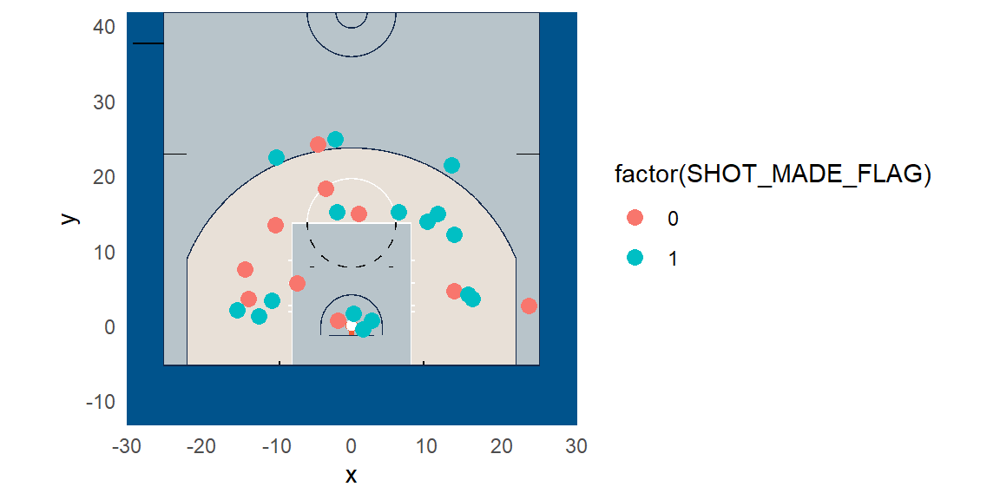
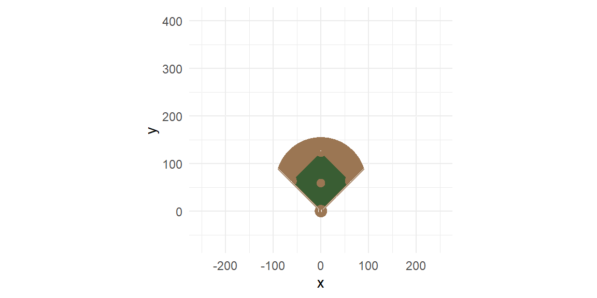
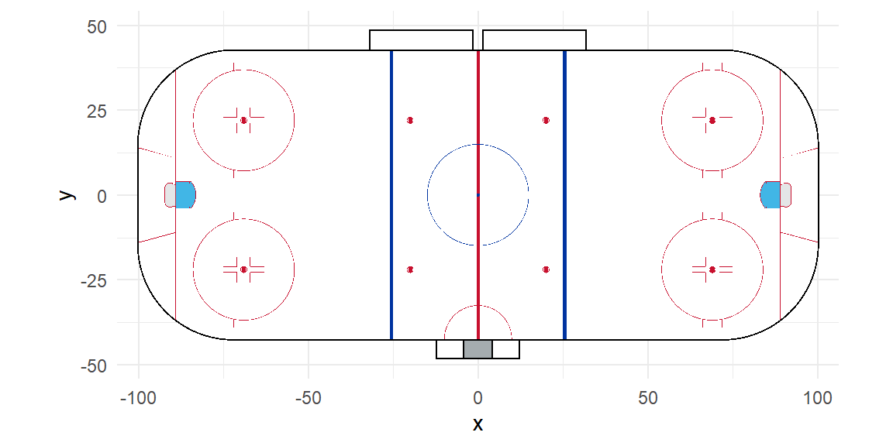

Rows: 26
Columns: 24
$ GRID_TYPE <chr> "Shot Chart Detail", "Shot Chart Detail", "Shot Ch…
$ GAME_ID <dbl> 21501037, 21501037, 21501037, 21501037, 21501037, …
$ GAME_EVENT_ID <dbl> 52, 64, 68, 151, 169, 180, 207, 214, 283, 286, 311…
$ PLAYER_ID <dbl> 1717, 1717, 1717, 1717, 1717, 1717, 1717, 1717, 17…
$ PLAYER_NAME <chr> "Dirk Nowitzki", "Dirk Nowitzki", "Dirk Nowitzki",…
$ TEAM_ID <dbl> 1610612742, 1610612742, 1610612742, 1610612742, 16…
$ TEAM_NAME <chr> "Dallas Mavericks", "Dallas Mavericks", "Dallas Ma…
$ PERIOD <dbl> 1, 1, 1, 1, 2, 2, 2, 2, 2, 2, 2, 3, 3, 3, 3, 3, 3,…
$ MINUTES_REMAINING <dbl> 7, 6, 6, 1, 11, 10, 8, 7, 2, 1, 0, 9, 9, 3, 2, 2, …
$ SECONDS_REMAINING <dbl> 37, 43, 26, 21, 48, 36, 33, 59, 21, 51, 8, 49, 20,…
$ EVENT_TYPE <chr> "Made Shot", "Missed Shot", "Missed Shot", "Missed…
$ ACTION_TYPE <chr> "Turnaround Fadeaway shot", "Jump Shot", "Jump Sho…
$ SHOT_TYPE <chr> "2PT Field Goal", "2PT Field Goal", "3PT Field Goa…
$ SHOT_ZONE_BASIC <chr> "Mid-Range", "Mid-Range", "Above the Break 3", "In…
$ SHOT_ZONE_AREA <chr> "Left Side(L)", "Center(C)", "Center(C)", "Left Si…
$ SHOT_ZONE_RANGE <chr> "8-16 ft.", "16-24 ft.", "24+ ft.", "8-16 ft.", "L…
$ SHOT_DISTANCE <dbl> 11, 18, 24, 9, 1, 14, 15, 16, 16, 12, 16, 25, 18, …
$ LOC_X <dbl> -106, -35, -45, -73, 2, 137, -20, -142, 161, -124,…
$ LOC_Y <dbl> 33, 183, 242, 57, 16, 46, 151, 75, 36, 13, 41, 214…
$ SHOT_ATTEMPTED_FLAG <dbl> 1, 1, 1, 1, 1, 1, 1, 1, 1, 1, 1, 1, 1, 1, 1, 1, 1,…
$ SHOT_MADE_FLAG <dbl> 1, 0, 0, 0, 1, 0, 1, 0, 1, 1, 1, 1, 1, 1, 0, 0, 1,…
$ GAME_DATE <dbl> 20160320, 20160320, 20160320, 20160320, 20160320, …
$ HTM <chr> "DAL", "DAL", "DAL", "DAL", "DAL", "DAL", "DAL", "…
$ VTM <chr> "POR", "POR", "POR", "POR", "POR", "POR", "POR", "…11 Visualization of Player Tracking Data
“You could be a kid for as long as you want when you play baseball.” - Cal Ripken, Jr.
In modern sports analytics, understanding and interpreting player movements can yield strategic insights far beyond traditional statistics. Player tracking data, which records the location of players on the playing surface throughout a game, has become widely available. Effectively visualizing this type of spatiotemporal data can help analysts and coaches uncover tactical patterns, identify performance trends, and gain strategic advantages. In this section, we explore methods to visualize player tracking data using the powerful R package gganimate, an extension of the widely used ggplot2 from the tidyverse.
11.1 Player Tracking Data Overview
Player tracking data typically consists of time-stamped x- and y-coordinates representing the player’s position on the field or court. This data can capture high-frequency movements and is usually collected through optical tracking systems or wearable devices.
The example below contains the shots taken by Dirk Nowitzki during a game against the Portland Trailblazers on March 20, 2016.
The dataset contains the positions of Dirk’s shots along with some other variables. Note the two variables LOC_X and LOC_Y. These will be used as the location of the shot.
Let’s start with just a simple scatterplot.
dat |> ggplot(aes(x = LOC_X, y = LOC_Y, col = factor(SHOT_MADE_FLAG)))+
geom_point()The scatterplot shows the locations of the shots but we cannot determine where on the court these shots are taking place without knowing what the x and y coordinates are referring to in relation to the court. A display of a basketball court will make any insights on the shots easier.
11.2 Plot Playing Area
In R, plotting the playing area can be accomplished through sport-specific packages or custom-built functions using ggplot2.
11.2.1 Basketball Court
For basketball courts, the sportyR package provides quick and accurate court visualizations.
library(sportyR)
geom_basketball("nba") +
theme_minimal()We have options to change the colors if we wish as well as only showing half the court.
court_plot = geom_basketball("nba", display_range = "offense",
color_updates = list(
offensive_half_court = "#B8C4CA",
defensive_half_court = "#B8C4CA",
court_apron = "#00538C",
two_point_range = c("#e8e0d7", "#ffffff66"),
center_circle_fill = "#B8C4CA",
painted_area = c("#B8C4CA", "#ffffff00"),
free_throw_circle_fill = "#e8e0d7",
sideline = "#13294b",
endline = "#13294b",
division_line = "#13294b",
center_circle_outline = "#13294b",
lane_boundary = c("#ffffff", "#ffffff00"),
three_point_line = c("#13294b", "#ffffff"),
free_throw_circle_outline = "#ffffff",
lane_space_mark = "#ffffff",
restricted_arc = "#13294b",
backboard = "#13294b"
)) +
theme_minimal()
court_plotIf we were to plot Dirk’s shots with this court, we obtain:
court_plot +
geom_point(data = dat, aes(x = LOC_X, y = LOC_Y,
col = factor(SHOT_MADE_FLAG)),
size = 3)We see these shots are not matching up. The coordinates of the court start at (0,0) in the center and the court is horizontal. The shots by Dirk in dat have the coordinates with (0,0) at the center of the basket with the court vertical. We can adjust the court with some options in geom_basketball.
court_plot = geom_basketball("nba", display_range = "defense",
rotation=90,
x_trans = 41.75,
color_updates = list(
offensive_half_court = "#B8C4CA",
defensive_half_court = "#B8C4CA",
court_apron = "#00538C",
two_point_range = c("#e8e0d7", "#ffffff66"),
center_circle_fill = "#B8C4CA",
painted_area = c("#B8C4CA", "#ffffff00"),
free_throw_circle_fill = "#e8e0d7",
sideline = "#13294b",
endline = "#13294b",
division_line = "#13294b",
center_circle_outline = "#13294b",
lane_boundary = c("#ffffff", "#ffffff00"),
three_point_line = c("#13294b", "#ffffff"),
free_throw_circle_outline = "#ffffff",
lane_space_mark = "#ffffff",
restricted_arc = "#13294b",
backboard = "#13294b"
)) +
theme_minimal()
court_plotOur last adjustment deals with the different units of measurement between the court coordinates and the shot data coordinates. The court coordinates are in feet. The coordinates of the shots are in feet times 10. We will make the adjustment and then plot the shots on the court.
court_plot +
geom_point(data = dat, aes(x = LOC_X/10, y = LOC_Y/10,
col = factor(SHOT_MADE_FLAG)),
size = 3)
11.2.2 Other playing surfaces
sportyR also supports other playing surfaces.
Football Field
geom_football("nfl") +
theme_minimal()Baseball Diamonds
geom_baseball("mlb") +
theme_minimal()
Hockey Rink
geom_hockey("nhl") +
theme_minimal()
Soccer Field
geom_soccer("fifa") +
theme_minimal()11.3 NFL Data
In the nfl_player_track.csv data, the locations of players is provided for different time points in a play. This particular game is for the Dallas Cowboys vs the New Orleans Saints in week 13 of the 2018 season.
dat2 = read_csv("data/nfl_player_track.csv")The data have the coordinate (0,0) at the left bottom of the fields when plotted horizontally. The coordinate (0,0) in geom_football is at the middle of the field. We can make the adjustment to have the coordinates match.
field = geom_football("nfl",
x_trans = 60,
y_trans = 26.67) +
theme_minimal()
fieldWe will examine one play. The position of each player moves during the play. The different movements are defined by the frame number (frameId).
dat_frame = dat2 |>
filter(playId == 74) |>
filter(frameId==1)
field+
geom_point(data = dat_frame, aes(x = x, y=y, col = team))
Note that the data only includes the skill players. The offensive and defensive linemen are not included in the data.
11.4 Animating Movement with gganimate
Static plots give valuable but limited insights. Animating player tracking data offers richer context by capturing player dynamics over time. gganimate elegantly extends ggplot2 to add temporal dimensions to our visualizations.
The football dataset includes the frame_Id. We can animate a play by animating over the frame_Id.
library(gganimate)
dat_play = dat2 |>
filter(playId == 74)
p = field +
geom_point(data=dat_play,
aes(x = x, y = y,
group = nflId,
color = factor(team)),
size = 5) +
scale_color_manual(values=c("#D3BC8D", "#815337", "#003594"))+
theme(legend.position = "none")+
transition_manual(frameId) +
ease_aes('linear')
animate(p, fps = 10, width = 1600, height = 900)
#to save the animation
anim_save("play01.gif")